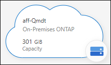
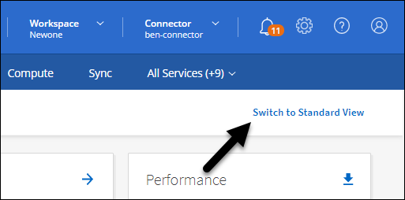

发行说明
发行说明
管理使用Connector发现的集群
 建议更改
建议更改
如果您使用连接器发现内部ONTAP 集群、则可以从"标准"视图创建卷、从"高级"视图使用System Manager并启用BlueXP数据服务。
在Canvas上、您使用Connector发现的集群的工作环境图标应类似于以下内容：

如果直接发现工作环境、则工作环境图标将包含"direct"一词。
从标准视图创建FlexVol卷
在使用连接器从BlueXP发现您的内置ONTAP集群后、您可以打开工作环境来配置和管理FlexVol卷。
创建卷
通过BlueXP、您可以在现有聚合上创建NFS或CIFS卷。您不能从BlueXP标准视图在内部ONTAP 集群上创建新聚合。您需要使用高级视图创建聚合。
通过名为"模板"的BlueXP功能、您可以创建针对特定应用程序(例如数据库或流式服务)的工作负载要求进行优化的卷。如果您的组织已创建应使用的卷模板，请按照说明进行操作 这些步骤。
-
从导航菜单中、选择*存储>画布*。
-
在"画布"页面上、选择要配置卷的内置ONTAP集群。
-
选择*卷>添加卷*。
-
按照向导中的步骤创建卷。
-
详细信息、保护和标记：输入有关卷的详细信息及其名称和大小、选择Snapshot策略并根据需要指定卷标记。
此页面上的某些字段不言自明。以下列表介绍了可能需要指导的字段：
字段 Description Size
您可以输入的最大大小在很大程度上取决于您是否启用精简配置、这样您就可以创建一个大于当前可用物理存储的卷。
快照策略
Snapshot 副本策略指定自动创建的 NetApp Snapshot 副本的频率和数量。NetApp Snapshot 副本是一个时间点文件系统映像、对性能没有影响、并且只需要极少的存储。您可以选择默认策略或无。您可以为瞬态数据选择无：例如， Microsoft SQL Server 的 tempdb 。
-
协议：选择卷的协议(NFS、CIFS或iSCSI)、然后设置卷的访问控制或权限。
如果您选择CIFS、但服务器尚未设置、则BlueXP会提示您使用Active Directory或工作组设置CIFS服务器。
以下列表介绍了可能需要指导的字段：
字段 Description 访问控制
NFS 导出策略定义子网中可访问卷的客户端。默认情况下、BlueXP输入一个值、用于访问子网中的所有实例。
权限和用户 / 组
通过这些字段，您可以控制用户和组（也称为访问控制列表或 ACL ）对 SMB 共享的访问级别。您可以指定本地或域 Windows 用户或组、 UNIX 用户或组。如果指定域 Windows 用户名，则必须使用 domain\username 格式包含用户的域。
-
使用情况配置文件：选择是在卷上启用还是禁用存储效率功能、以减少所需的总存储量。
-
Review *：查看卷的详细信息，然后选择*Add。
-
使用模板创建卷
如果您的组织已创建内部 ONTAP 卷模板，以便您可以部署针对特定应用程序的工作负载要求进行优化的卷，请按照本节中的步骤进行操作。
此模板应使您的工作更轻松，因为模板中已定义某些卷参数，例如磁盘类型，大小，协议，快照策略等。如果已预定义某个参数，则只需跳到下一个 volume 参数即可。

|
使用模板时，您只能创建 NFS 或 CIFS 卷。 |
-
在"画布"页面上、选择要配置卷的内置ONTAP集群。
-
选择 …
 > * 从模板添加卷 * 。
> * 从模板添加卷 * 。
-
在_Select Template _页面中，选择要用于创建卷的模板，然后选择*Next*。

此时将显示 _Define Parameters_页面 。

*注：*如果要查看这些参数的值，可以选中复选框*显示只读参数*以显示已被模板锁定的所有字段。默认情况下，这些预定义字段将被隐藏，并且仅显示需要填写的字段。
-
在 context 区域中，工作环境将使用您启动的工作环境的名称进行填充。您需要选择要在其中创建卷的 * 存储虚拟机 * 和 * 聚合 * 。
-
为模板中未硬编码的所有参数添加值。
-
定义完此卷所需的所有参数后，选择*运行模板*。
BlueXP会配置卷并显示一个页面、以便您可以查看进度。

然后，新卷将添加到工作环境中。
此外、如果在模板中实施了任何二级操作、例如在卷上启用BlueXP备份和恢复、则也会执行该操作。
如果配置了 CIFS 共享、请授予用户或组对文件和文件夹的权限、并验证这些用户是否可以访问该共享并创建文件。
创建 FlexGroup 卷
您可以使用BlueXP API创建FlexGroup卷。FlexGroup 卷是一种横向扩展卷，可提供高性能以及自动负载分布。
使用高级视图管理ONTAP (System Manager)
如果您需要对内部ONTAP 集群执行高级管理、可以使用ONTAP 系统管理器执行此操作、该管理接口随ONTAP 系统提供。我们直接在BlueXP中提供了System Manager界面、因此您无需离开BlueXP即可进行高级管理。
此高级视图可作为预览版使用。我们计划改进此体验、并在即将发布的版本中添加增强功能。请通过产品内聊天向我们发送反馈。
功能
通过BlueXP中的高级视图、您可以访问其他管理功能：
-
高级存储管理
管理一致性组、共享、qtree、配额和Storage VM。
-
网络管理
管理IP空间、网络接口、端口集和以太网端口。
-
事件和作业
查看事件日志、系统警报、作业和审核日志。
-
高级数据保护
保护Storage VM、LUN和一致性组。
-
主机管理
设置SAN启动程序组和NFS客户端。
支持的配置
运行9.10.0或更高版本的内部ONTAP 集群支持通过System Manager进行高级管理。
在GovCloud地区或无法访问出站Internet的地区不支持System Manager集成。
使用高级视图
打开内部ONTAP工作环境、然后选择"高级视图"选项。
-
在"画布"页面上、选择要配置卷的内置ONTAP集群。
-
在右上角，选择*切换到高级视图*。

-
如果出现确认消息，请仔细阅读并选择*Close*(关闭*)。
-
使用System Manager管理ONTAP。
-
如果需要，请选择*切换到标准视图*以通过BlueXP返回标准管理。

获取有关System Manager的帮助
如果在ONTAP 中使用System Manager需要帮助、请参见 "ONTAP 文档" 了解分步说明。以下链接可能会有所帮助：
启用BlueXP服务
在您的工作环境中启用BlueXP数据服务、以复制数据、备份数据、对数据进行分层等。
- 复制数据
-
在Cloud Volumes ONTAP 系统、适用于ONTAP 的Amazon FSx文件系统和ONTAP 集群之间复制数据。选择一次性数据复制(可帮助您将数据移入和移出云)、或者选择重复计划(有助于灾难恢复或长期数据保留)。
- 备份数据
-
将数据从内部ONTAP 系统备份到云中的低成本对象存储。
- 扫描，映射和分类数据
-
扫描企业内部集群以映射数据并对数据进行分类、并确定私有信息。这有助于降低安全性和合规性风险，降低存储成本，并有助于您的数据迁移项目。
- 将数据分层到云
-
通过自动将非活动数据从 ONTAP 集群分层到对象存储，将数据中心扩展到云。
- 保持运行状况、正常运行时间和性能
-
在发生中断或故障之前、对ONTAP 集群实施建议的修复。
- 确定容量较低的集群
-
确定容量较低的集群、查看集群的当前容量和预测容量等。